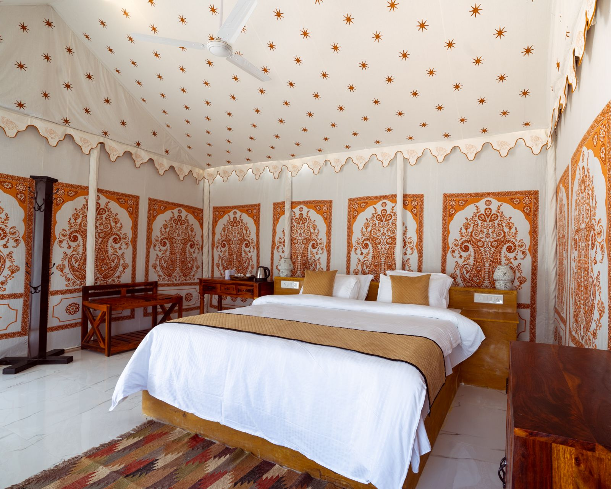

Rooms
Confirm the exact room, bed arrangement, inclusions and total rate for your dates.
Room guidance →A look around
These locally hosted photographs show sandstone interiors, several room details, a candlelit rooftop table, camel scenes and an open-sky desert scene. They introduce the setting; they do not confirm a room assignment, current tour availability or package inclusions.
Inside and beyond the fort
These locally hosted photographs are visual references from the existing property collection. They show settings, rooms and experience-related scenes; they do not confirm current inventory, a specific room assignment, a menu, service hours, route, package or availability.
Use the collection to orient your questions, then open the relevant planning page for details that need confirmation.
Architecture and setting
Sandstone passages, rooftops and temple details help introduce the wider setting. A photograph is not a route marker or a guarantee of access.

Haveli interior
A view of sandstone passages and carved interior details. Use the story page for context, and check the arrival guide before travelling into the fort.
Read our story →
Rooftop outlook
This source photograph looks across sandstone rooftops and fort walls from a rooftop setting. It does not confirm a current table, view or service arrangement.
Plan your arrival →
Heritage detail
Temple spires are part of the wider heritage setting. This image does not promise a particular stop or access arrangement on a guided walk.
Explore experience options →Room references
Compare visual character, then confirm the exact room name, layout, features and availability for your dates. These are not live room assignments.

Red-toned bedroom
This source photograph shows a red-toned bedroom with a carved wooden bed. Confirm the exact room, layout and availability for your dates.
Compare room details →
Interior reference
This bedroom photograph is a visual reference. Confirm the current room name, layout and features before deciding.
Read room guidance →
Carved details
The photograph shows carved furniture and sandstone details. Confirm the exact room, features and availability rather than relying on the image alone.
Review room options →Views and dining setting
Use the photographs to understand the setting, then confirm the current menu, service hours, prices and any special arrangement.

Above the city
The rooftop terrace overlooks Jaisalmer at dusk. Ask for the current menu, service hours, prices and table availability before planning a meal.
Read dining guidance →
Evening setting
A candlelit rooftop table from the property photo collection. It is not a promise that this arrangement is available on a particular date.
Plan a dining enquiry →Desert and overnight references
Desert photographs show different kinds of settings. They do not confirm current operation, route, transport, timing or package inclusions.

Open sky
An open-sky sleeping setup under a star-filled desert sky. Confirm the current overnight format, route, timing and inclusions for your date.
Explore experience options →
Tent interior reference
This source photo shows a desert-camp tent interior with a bed and patterned walls. It does not confirm which tent or facilities are currently available.
Review overnight options →
Sunset desert scene
The image shows a camel caravan at sunset. Confirm whether an outing is offered, along with route, timing, transport and inclusions.
Explore experience options →
Daylight scene
Camels and handlers are pictured on sandy ground in daylight. The image is not a live itinerary or a promise of a particular route.
Review experience guidance →Planning note: Current rates, room availability, restaurant hours, tour inclusions and arrival assistance must be confirmed for your date. Contact and booking actions remain inactive until the owner verifies the public channels.
Continue planning
Use the practical pages to compare options and understand what needs confirmation before you travel.
Confirm the exact room, bed arrangement, inclusions and total rate for your dates.
Room guidance →Ask about routes, languages, timing and package details for your preferred date.
Experience guidance →Plan for the final walk into Jaisalmer Fort and confirm any arrangements separately.
Arrival guidance →